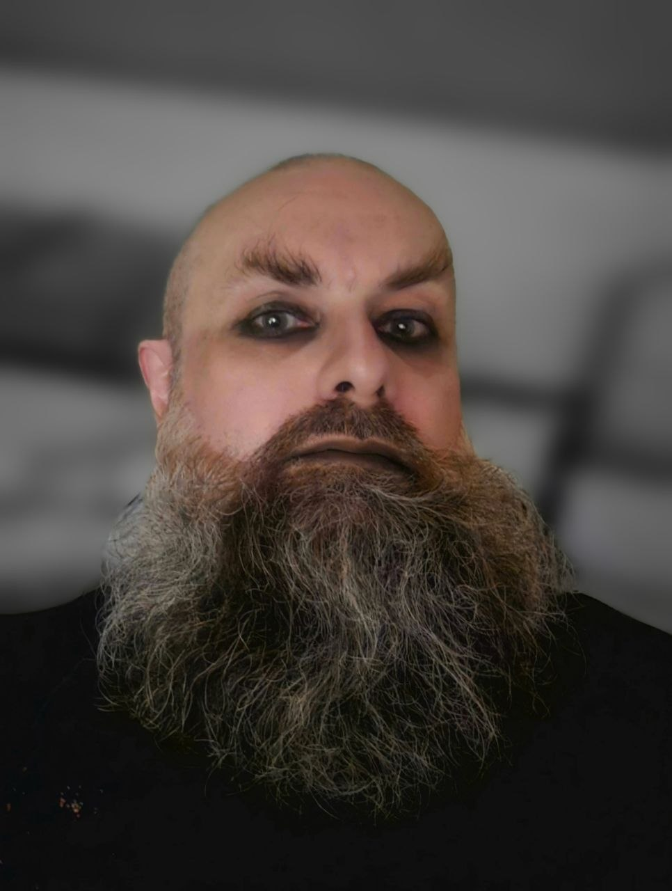

Impressum
Stopka Redakcyjna (Masthead)
The Reverse Emo Changeling — Nieregularnik społeczno-artystyczny
Wydawca / Publisher:
Bartosz Gala — Toxic Echo studio
Siedziba i adres redakcji:
ul. Hetmana Stanisława Żółkiewskiego 9/4
31-539 Kraków, Polska
Kontakt z wydawcą:
publisher@toxic-echo.studio
Redaktor naczelny / Editor-in-Chief:
Mighn Taghor (eic@emo-changeling.xyz)
Dziennikarz prowadzący / Host:
Nico Łach (nico.lach@emo-changeling.xyz)
Publicystyka subkulturowa:
Mighn Taghor
Rejestracja prasowa:
Sąd Okręgowy w Krakowie, Wydział I Cywilny
Rejestr dzienników i czasopism: I Ns Rej PR 3553
Sprawy prawne i zapytania:
legal@emo-changeling.xyz
Zasady publikacji i regulamin:
Pełny regulamin / Legal
Kluczowy Zespół Redakcyjny

Nico Łach
Dziennikarz prowadzący / Host wywiadów wideo / Art coordinator. DID System Body (reprezentacja frontów: Zebroid, Vikasiek, Wiktor, Marina). Znany pod pseudonimami artystycznymi "Zebroid" oraz "Vikasiek".

Mighn Taghor
Redaktor naczelny / Editor-in-Chief. Publicysta, eseista muzyczny, dyrektor studia i koordynator backendu technicznego Toxic Echo Studio.
Bartosz Gala
Wydawca / Publisher. Odpowiada za infrastrukturę prawną, technologiczną i operacyjną ekosystemu magazynu.
Impressum
Editorial Masthead
The Reverse Emo Changeling — Nieregularnik społeczno-artystyczny
Wydawca / Publisher:
Bartosz Gala — Toxic Echo studio
Siedziba i adres redakcji / Address:
ul. Hetmana Stanisława Żółkiewskiego 9/4
31-539 Kraków, Poland
Publisher Contact:
publisher@toxic-echo.studio
Redaktor naczelny / Editor-in-Chief:
Mighn Taghor (eic@emo-changeling.xyz)
Dziennikarz prowadzący / Host:
Nico Łach (nico.lach@emo-changeling.xyz)
Subcultural Essays:
Mighn Taghor
Rejestracja prasowa / Press Registry:
District Court in Krakow, 1st Civil Division
Register of journals and magazines: I Ns Rej PR 3553
Legal & Press Inquiries:
legal@emo-changeling.xyz
Editorial Policies & Terms:
Full Terms / Legal
Core Editorial Team
Nico Łach
Lead Journalist / Video Essay Host / Art Coordinator. DID System Body (fronts: Zebroid, Vikasiek, Wiktor, Marina). Known under the artistic pseudonyms "Zebroid" and "Vikasiek".
Mighn Taghor
Editor-in-Chief. Essayist, music critic, studio director and technical backend coordinator at Toxic Echo Studio.
Bartosz Gala
Publisher. Responsible for legal, technical, and operational infrastructure across the magazine ecosystem.